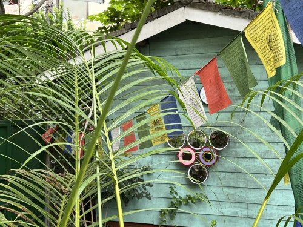
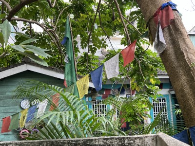
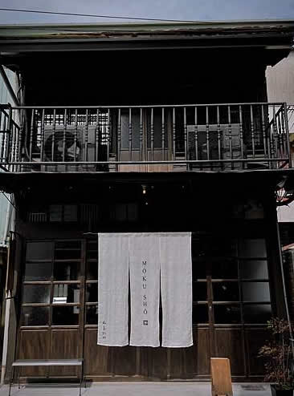
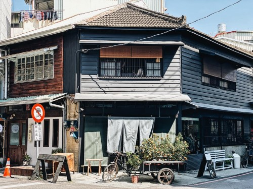

| 蘭井三合院 ｜ 木商咖啡 ｜新華美西裝社 | |
遊走於嘉義市區，你很難不被超過6000棟的木構造老房子所感動，也在一次次地漫遊中，感受到這個城市景觀似乎慢慢有些不同：老木屋轉身為兼具美感品味的商業空間，或是木構建築移除了破損廢棄的附掛物，再現建築原貌，「重新素顏」再現樸實木質美感，也讓人忍不住遙想過往充滿木頭香的嘉義街景。 |
|
  |
蘭井三合院 有別於鄰近處嘉義東市場的熱鬧喧囂，蘭井三合院租客 Franck 讓近百年古厝以內斂沉穩的姿態，讓藝術在此相遇、疊加出更多可能。原來，蘭井三合院內住著法國大提琴家兼人類學與民族音樂學博士法蘭克（Franck Bernède）。常在世界各地演出的他曾旅居台北五年，某次拜訪嘉義時意外遇見這間沉寂逾四十年的老屋，並在踏入此地的瞬間，浮現在此生活的畫面，從此和這座小城結下深厚情緣。 地址：嘉義市和平路 223 巷 12 號（蘭井街 26 號對面巷內） 資料來源：第二座森林——舊屋力十週年專刊 |
|  | |木商珈琲Cafe Mokushō東市場周邊新開幕的老屋餐廳! 木商珈琲的命名來自這棟建築最初的商業身份——販售庖廚柴薪的商舖，供給柴薪給東市場的商家及周圍的住戶居家使用。
日治時期鋪設阿里山鐵道，帶起阿里山林場的經濟開發，山上的木頭運到山下的嘉義製材所加工，供應給下游的木材行，當時的嘉義材木店四處林立，林業經濟蓬勃。從木商珈琲Instagram上分享的老照片可見，第一代柴薪店舖時建築前都是木柴，吳先生一家撿拾檜木角料，捆成一圈圈等待民眾購入，在家家戶戶化為溫暖的火光。 |
|  |
|